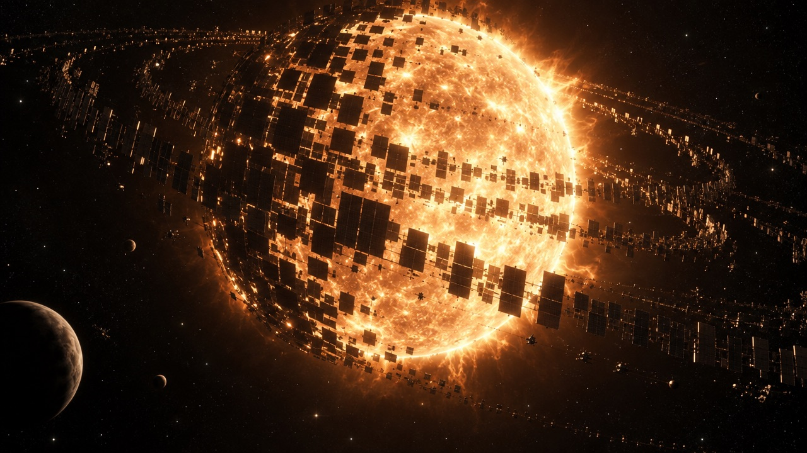

Twelve lines of text in.
A finished film out.
A physically accurate ray tracer for cosmology, astronomy and the outdoors. Your agent writes the scene. Your laptop traces the light.
The reel
4 films · 1 program · 0 cloud gpusThree commands.
Any agent can run them.
-
listRead the catalogueEvery scene, smoke, preset, stock, tune and voicing.
-
assessCatch mistakes before tracingUnknown keys are refused at their exact source location.
-
drawGet the finished filmFrames, an MP4 and a synthesized score. Re-expose later without re-tracing.

Built by Jane Arc
Scientific software with a production engineer's standards. Her third renderer, and the one that stuck.
- darkroom
- Re-expose without re-tracing
- ninjafilm
- Real stock, optics and grain
- manufactory
- Procedural worlds
- synth
- A score in time with the picture
- sky
- The cosmos, to scale
- burning-trousers
- Physics, independently checked